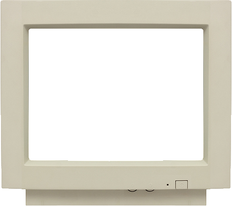
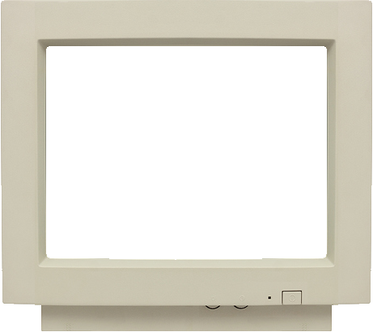

Fake Windows Update
Play a funny prank on your friends by mimicking the Windows update or welcome screen.
After the update, a fake Blue Screen of Death will appear, giving you a chance to reveal the prank!
This site is a clone of fakeupdate.net.
Press F11 for full-screen mode.
 
